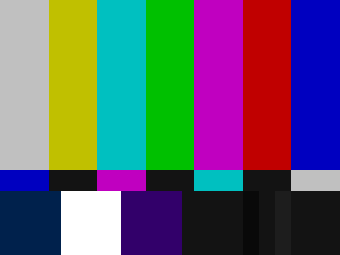

Your website, as seen on a tube TV from 1987.
Two files. Scanlines, snow, hum bars, colour fringes and a channel button. No build step, no framework, nothing loaded from outside.
Install
Put crt.css, crt.js and the fonts/ folder next to each other. Then add two lines to your page and the attribute to html. Your page keeps its fonts, colours and buttons; the skin only puts the TV in front of it.
<html data-skin="crt">
<link rel="stylesheet" href="crt.css">
<script src="crt.js"></script>Leave the attribute out and the skin stays off until someone opens your page with ?skin=crt. The choice is remembered, ?skin=off clears it. Press the pulsing CH1 top right, or the arrow keys.
Want the device look too, pixel font for headings, lime links, thick frames? Add crt-look.css after crt.css. The Look button in the top bar switches it on here.
What it does
- A
Power on
The picture comes in disturbed: snow, hum bar, the content waves. After three seconds it settles. Headings snap into focus as they enter the screen.
- B
Reception
Leave the page alone for ten seconds and the signal drifts for four. Any touch, key or scroll brings it back. While you scroll, the colour fringes on the headings widen.
- C
Channels
CH1 is your page. CH2 is static, every click returns. CH3 shows an image or video of your choice, off unless you set one. The last channel is your page with clean reception: no artifacts at all, only the occasional drift. Keys 1 to 4 and the arrow keys switch too.
- D
Weak hardware
Reduced motion, data saver, little memory or a frame test under 45 fps switch to a lite mode: scanlines and vignette stay, nothing animates, text stays sharp.
Hooks
The skin works on plain elements. A few optional attributes give it more to work with:
data-crt="hero" | A section with a photo: saturated like NTSC chroma, darkened from below, a second layer of scanlines. |
data-crt="photo" | A figure with a second layer of scanlines and a colour fringe. |
data-crt="title" | Any element that snaps into focus like a heading, for example a quote. |
data-crt="marker" | Small pixel labels like A, B, C (with crt-look.css). |
data-crt="button" | A link that looks like a button (with crt-look.css). |